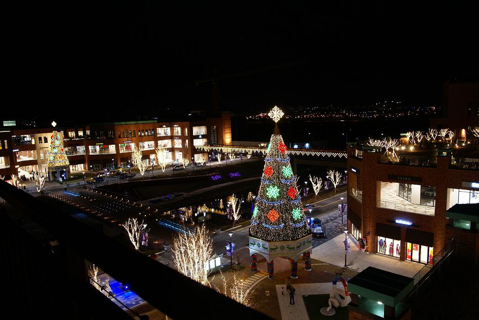

|  |
| 번호 | 11 |
|---|---|
| 분류 | 쇼핑 |
| 장소 번호 |
G0010 |
| 장소명 | 롯데 프리미엄아울렛 파주점 |
| 장소 주요 설명 |
롯데 프리미엄아울렛 파주점은 교외형 아울렛 최초로 문화센터, 문화홀, 갤러리, 롯데시네마, 뽀로로 키즈카페, 북스토어 등 문화와 쇼핑을 동시에 즐길 수 있는 복합 라이프 스타일 아울렛 |
| 장소 상세 설명 |
유럽풍의 고급스러운 외관에 조경과 인근 심학산이 만들어 내는 아름다운 자연환경은 편안한 휴식공간을 제공합니다. 그리고 출판단지, 헤이리 예술마을, 오두산 통일전망대등 주변 관광지와 연계하여 파주 관광의 즐거움까지 한번에 누리실 수 있습니다. 사람과 자연이 함께 소통할 수 있는 공간을 기본으로 한 롯데 프리미엄 아울렛 파주점은 쇼핑에서 문화 자연의 여유까지 하나로 통하는 공간이 될 수 있도록 정성을 다해 노력하겠습니다. |
| 주소 | 회동길 390 |